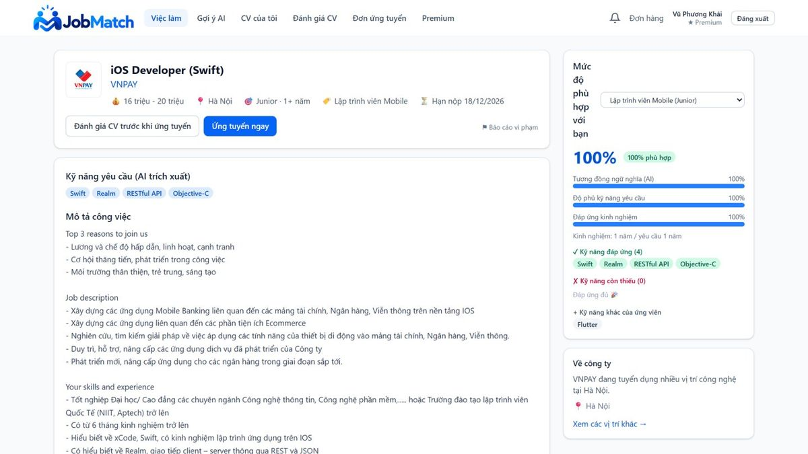
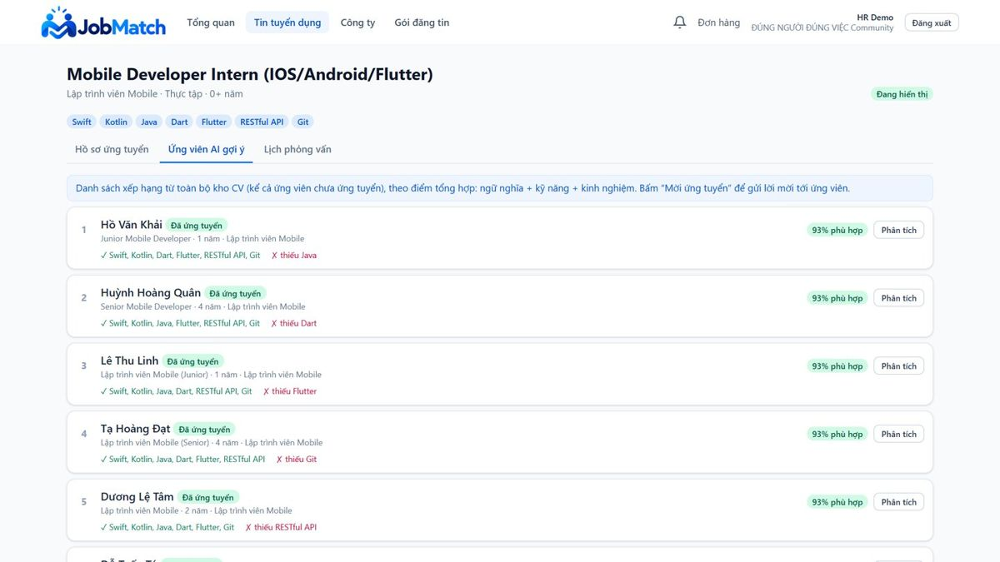
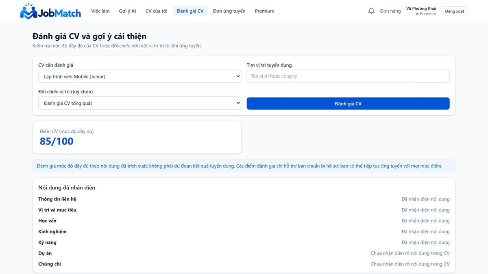

JobMatch: a recruitment platform that matches CVs to jobs by meaning
Keyword filters miss good candidates: a CV that says “ReactJS” can fail a job asking for “React”. JobMatch ranks CVs and jobs with a fine-tuned multilingual-E5 embedding model plus a skill and experience score, and explains every match with matched and missing skills. Around that engine it runs the full hiring flow: applications, interview booking and VietQR payments, for candidates, recruiters and admins.



My role: individual specialization project. I wrote the requirements, designed the system and UI, built the AI module and the platform, and planned and ran the testing. Stack: Python, FastAPI, React, PostgreSQL/pgvector, Celery, Docker, GitHub Actions.
Fine-tuning lifted ranking quality on every test setting
I compared the base E5 model with the fine-tuned one on four evaluation settings I built, using NDCG@10 as the main metric (graded relevance 0/1/2, top-10 results). BM25 and skill-only ranking were the baselines.
| Test setting | Size | What it checks |
|---|---|---|
| Template test set | 197 JD × 591 CV | Ranking over the full corpus in both directions |
| LLM-rewritten CVs | 188 JD × 281 CV | End to end: text → parser → profile → ranking, with natural wording |
| LLM-relabeled pairs | 50 JD × 10 CV | Order within small sets, with labels not derived from skill rules |
| Parser test files | 200 files | 67 single-column PDF, 67 two-column PDF, 66 DOCX with answer keys |
- Hybrid scoring (semantic + skill coverage + experience) reached NDCG@10 0.905, MRR@10 0.987 and Recall@50 0.9997 on the template set. Weights were tuned on the validation set only.
- A finding I kept in the report: the fine-tuned model improved semantic search, but the base model with hybrid scoring scored slightly higher NDCG@10 (0.917). Better embeddings did not guarantee the best final ranking.
- Parser: skill recall 0.995, F1 0.951. Error analysis showed lower precision from generic words read as skills, such as “CRM” and “Security”.
- Leakage control: data split by job (80/10/10, fixed seed), so no job appears in both training and test.
Limits: all CVs are synthetic or LLM-rewritten, and relevance labels come from rules or an LLM, not human experts. The numbers show progress on these sets, not accuracy on real users.
LLMs built and checked the test data, with guardrails against made-up content
Model selection
Compared 9 free LLMs on OpenRouter on the same two tasks before choosing which to use.
LLM-as-a-judge
Re-labeled JD–CV pairs on a 0/1/2 scale with reasons. Agreement with rule labels: 91.4% on training pairs, 84.4% on the 500 hand-label pairs.
Cleaner training data
Dropped 11.5% of training triplets the judge flagged as mislabeled. The judge also exposed a bug in the CV generator, fixed at the source.
Hallucination checks
Prompted the LLM to rewrite test CVs naturally. Automatic checks rejected any rewrite that added skills, changed names or switched language.
67 requirement-based test cases, automated and traced to requirements
Black-box design with equivalence partitioning, boundary values and state-transition testing. Cases cover roles and ownership, expired holds, repeated requests and wrong payment amounts. A case passes only when the response code, returned data and stored state all match.
Integration · pytest
145 tests from 13 files through FastAPI TestClient: permissions, application states, concurrent interview booking, idempotent payment webhooks, refunds.
System · Playwright
11 browser scenarios on Microsoft Edge: VietQR order, simulated webhook, resent webhook not extending Premium twice, underpayment sent to reconciliation.
CI · GitHub Actions
Backend and frontend workflows: dependencies, migrations, lint, API contract check, pytest and build.
Defect log
| ID | Found by | Problem | Status |
|---|---|---|---|
| BUG-01 | ST-10 | Job API accepted negative salary and min > max, returning 200 instead of 422 | fixed |
| BUG-02 | UI-09 | Admin payment list showed orders outside the chosen filter: a stale response overwrote the new one | fixed |
| BUG-03 | UI-09 | Admin page used a different order status name from the specification | fixed |
| BUG-04 | Test setup | Test config did not disable SMTP, so email tests sent real mail and failed | fixed |
| BUG-05 | Contract check | API spec file was missing new endpoints | fixed |
| BUG-06 | Deployment | Worker kept an empty SMTP password from an old image, so reset emails never arrived | fixed |
| BUG-07 | Deployment | Password-reset link pointed to the old dev port | fixed |
| BUG-08 | UI-04 | A demo company logo URL is blocked by the browser | open |
| BUG-09 | UI-11 | On a 503, the reset page shows the error twice | open |
Work Management System
Product / Business Analyst · Academic team project · July 2026 – present
- Defined requirements, user stories and acceptance criteria for backlog, sprint and task management.
- Designed UML diagrams (use case, activity, sequence, class) and business rules for task lifecycles.
- Worked in an Agile/Scrum team: backlog refinement, sprint planning and team discussions.